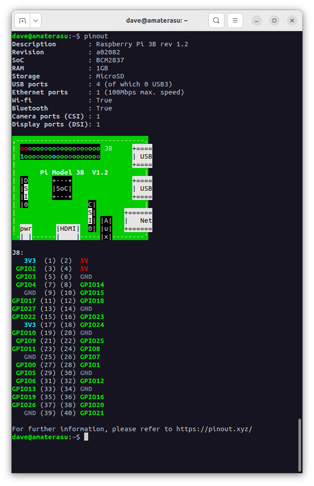
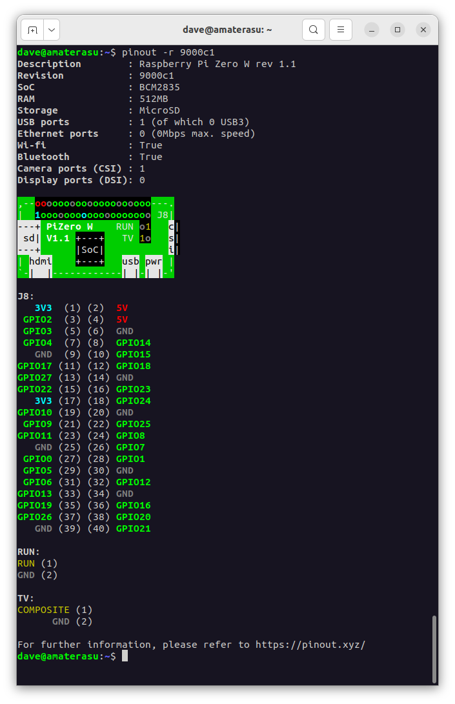

8.1. pinout
A utility for querying GPIO pin-out information.

8.1.1. Synopsis
pinout [-h] [-r REVISION] [-c] [-m] [-x]
8.1.2. Description
A utility for querying Raspberry Pi GPIO pin-out information. Running pinout on its own will output a board diagram, and GPIO header diagram for the current Raspberry Pi. It is also possible to manually specify a revision of Pi, or (by Configuring Remote GPIO) to output information about a remote Pi.
8.1.3. Options
- -h, --help
Show a help message and exit
- -r REVISION, --revision REVISION
Specifies a particular Raspberry Pi board revision code. The default is to autodetect revision of current device by reading
/proc/cpuinfo
- -c, --color
Force colored output (by default, the output will include ANSI color codes if run in a color-capable terminal). See also
pinout --monochrome
- -m, --monochrome
Force monochrome output. See also
pinout --color
- -x, --xyz
Open pinout.xyz in the default web browser
8.1.4. Examples
To output information about the current Raspberry Pi:
$ pinout
For a Raspberry Pi model 3B, this will output something like the following:
Description : Raspberry Pi 3B rev 1.2
Revision : a02082
SoC : BCM2837
RAM : 1GB
Storage : MicroSD
USB ports : 4 (of which 0 USB3)
Ethernet ports : 1 (100Mbps max. speed)
Wi-fi : True
Bluetooth : True
Camera ports (CSI) : 1
Display ports (DSI): 1
,--------------------------------.
| oooooooooooooooooooo J8 +====
| 1ooooooooooooooooooo | USB
| +====
| Pi Model 3B V1.2 |
| |D +---+ +====
| |S |SoC| | USB
| |I +---+ +====
| |0 C| |
| S| +======
| I| |A| | Net
| pwr |HDMI| 0| |u| +======
`-| |------| |-----|x|--------'
J8:
3V3 (1) (2) 5V
GPIO2 (3) (4) 5V
GPIO3 (5) (6) GND
GPIO4 (7) (8) GPIO14
GND (9) (10) GPIO15
GPIO17 (11) (12) GPIO18
GPIO27 (13) (14) GND
GPIO22 (15) (16) GPIO23
3V3 (17) (18) GPIO24
GPIO10 (19) (20) GND
GPIO9 (21) (22) GPIO25
GPIO11 (23) (24) GPIO8
GND (25) (26) GPIO7
GPIO0 (27) (28) GPIO1
GPIO5 (29) (30) GND
GPIO6 (31) (32) GPIO12
GPIO13 (33) (34) GND
GPIO19 (35) (36) GPIO16
GPIO26 (37) (38) GPIO20
GND (39) (40) GPIO21
For further information, please refer to https://pinout.xyz/
By default, if stdout is a console that supports color, ANSI codes will be used
to produce color output. Output can be forced to be --monochrome:
$ pinout --monochrome
Or forced to be --color, in case you are redirecting to something
capable of supporting ANSI codes:
$ pinout --color | less -SR
To manually specify the revision of Pi you want to query, use
--revision. The tool understands both old-style revision codes
(such as for the model B):
$ pinout -r 000d
Or new-style revision codes (such as for the Pi Zero W):
$ pinout -r 9000c1


You can also use the tool with Configuring Remote GPIO to query remote Raspberry Pi’s:
$ GPIOZERO_PIN_FACTORY=pigpio PIGPIO_ADDR=other_pi pinout
Or run the tool directly on a PC using the mock pin implementation (although in this case you’ll almost certainly want to specify the Pi revision manually):
$ GPIOZERO_PIN_FACTORY=mock pinout -r a22042